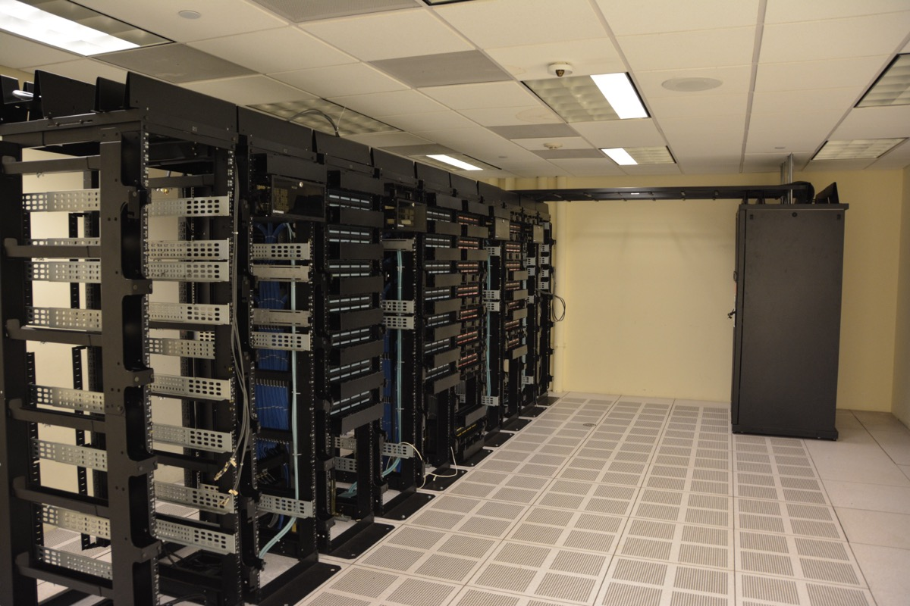
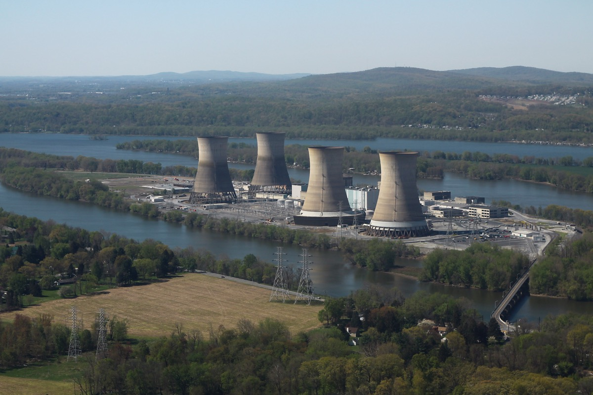

Executive Summary
이 글은 "미국 사람들이 동네 데이터센터에 얼마나 반대하는가"라는 물음에 왜 답이 하나로 나오지 않는지를 따라간다. 2026년 봄부터 여름까지 넉 달 남짓한 사이에 미국에서 전국 조사 여덟 건이 나왔고, 지역 데이터센터 반대율은 49%에서 75%까지 적혔다. 같은 3월에 49%와 71%가 함께 나왔다. 흩어진 것은 여론만이 아니었다. 무엇을 물었는지, 어느 칸을 읽어 줬는지, 얼마나 가까운 곳을 가리켰는지가 조사마다 달랐다.
무엇에 찬성하느냐고 물으면 답은 오히려 선명해진다. 성인 삼천여 명을 물은 조사에서 응답자가 가장 널리 동의한 항목은 "짓지 마라"가 아니었다. "전력망을 보강해야 한다면 그 비용은 지은 쪽이 내라"였다. 반대로 데이터센터가 일자리와 세수에 보탬이 된다는 평가는 모든 항목 가운데 가장 낮았다. 사람들이 내놓는 요구는 인공지능을 멈추라는 쪽이 아니라 청구서를 누가 받느냐는 쪽에 가깝다.
그 요구의 내용은 펜실베이니아에서 열여덟 달을 머문 연구진이 직접 들은 이야기와 겹친다. 전기요금, 집값, 앞서 두 차례 지나간 산업의 기억, 협상 자리에 앉은 사람이 비밀유지계약에 서명해 말을 못 하는 상황. 네 갈래는 저마다 다른 데서 출발하는데, 연구진이 그 끝에서 만난 상대는 같았다. 그리고 이 글이 마지막에 마주치는 것은 더 불편한 사실이다. 그 논쟁의 크기를 말해 주는 숫자들이 집계처마다 다른 것을 세고 있다.
같은 3월에 나온 두 조사의 반대율
같은 나라, 다른 문항
전력망 보강 비용을 건설사가 내게 하는 정책 지지
건설 수 제한 지지(62%)보다 높다
제안 100여 개 중 1단계 인허가를 다 받은 사업
펜실베이니아 주정부 집계, 2026년 8월
펜실베이니아 데이터센터 개수 집계 범위
집계처 일곱 곳, 기준 시점 2026년 7~9월

같은 계절에 물었는데 답이 마흔아홉에서 일흔다섯까지 나왔다
2026년 9월 22일 테크크런치 기사는 이렇게 시작한다. "미국인의 60% 이상이 신규 데이터센터를 제한하는 데 찬성한다." 기사는 이 한 문장의 근거로 세 건의 조사에 링크를 걸어 두었다. 그 세 건을 차례로 열어 보면 곧 이상한 점이 보인다. 셋은 같은 것을 재지 않았다. 둘은 "내가 사는 지역에 데이터센터가 들어오는 데 찬성하는가"를 물었고, 나머지 하나는 "신규 데이터센터 수를 제한하는 정책에 찬성하는가"를 물었다. 앞의 것은 반대율이고 뒤의 것은 정책 지지율이다. 두 값을 한 문장으로 묶는 순간 무엇이 60%인지가 사라진다.
범위를 세 건에서 여덟 건으로 넓히면 어긋남의 폭이 더 커진다. 2026년 2월부터 8월까지 미국에서 나온 전국 조사 여덟 건을 현장 시점 순으로 늘어놓은 것이 아래 표다. 맨 오른쪽 두 열, 그러니까 "어느 쪽도 아니다" 칸을 응답자에게 읽어 줬는지와 조사를 어떤 방식으로 돌렸는지를 함께 놓았다. 이 두 열이 뒤에서 답을 가르는 자리가 된다.
| 조사 | 현장 시점 | 응답자 | 무엇을 물었나 | 반대 | 지지 | '어느 쪽도' 칸 | 방식 |
|---|---|---|---|---|---|---|---|
| 애넌버그 1차 | 2026-02~03 | 미공개 | 내 지역 신규 데이터센터 | 49 | 21 | 있음 | 온라인+전화 |
| 갤럽 | 2026-03-02~18 | 1,000 | 내 지역 AI 데이터센터 | 71 | 27 | 따로 읽어 주지 않음 | 전화 |
| 로이터·입소스 | 2026-06-03~08 | 4,531 | 내 커뮤니티 데이터센터 | 57 | 14 | 명시 안 됨 | 온라인 |
| 애넌버그 2차 | 2026-06-16~07-19 | 1,320 | 내 지역 신규 데이터센터 | 61 | 14 | 있음(25% 선택) | 온라인+전화 |
| AP-NORC·EPIC | 2026-07-06~24 | 3,424 | 정책: 신규 건설 수 제한 | 8 | 62 | 있음(29% 선택) | 확인 못 함 |
| 폭스뉴스 | 2026-07-17~20 | 1,003 등록 유권자 |
내 지역 AI용 데이터센터 | 70 | 30 | 양자택일 | 전화+온라인 |
| 히트맵 프로 | 2026-08-08~13 | 2,045 등록 유권자 |
내 근처 신규 데이터센터 | 75 | 미공개 | 명시 안 됨 | 문자·웹 |
| 매사추세츠대 | 2026-08-21~26 | 1,000 | 내 지역 AI 데이터센터 | 65 | 11 | 있음(24% 선택) | 온라인 |
각 조사의 원 토플라인과 발표문에서 확인한 값이다. AP-NORC·EPIC 행만 물음의 성격이 다르다. 나머지 일곱은 내 지역에 짓는 데 찬성하는지를 물었고, 이 한 건은 신규 건설 수를 제한하는 정책에 찬성하는지를 물었다. 같은 열에 놓여 있지만 같은 수가 아니다.
표에서 가장 먼저 눈에 걸리는 두 줄은 맨 위 두 줄이다. 애넌버그 공공정책센터의 1차 조사는 2026년 2월에서 3월 사이에 반대 49%를 적었고, 갤럽은 3월 2일부터 18일까지 물어 반대 71%를 적었다. 현장 시점이 겹친다. 두 조사 사이의 22%p는 한 달 안에 여론이 뒤집혀서 생긴 값으로 보기 어렵다.
1.1문항이 다르면 답도 다른 것을 잰다
두 조사가 다르게 한 것을 꼽으면 넷이다. 첫째, 그 세 번째 칸이다. 애넌버그는 응답자에게 읽어 줬고 갤럽은 따로 읽어 주지 않았다. 다만 갤럽이 "모르겠다"를 어떻게 처리하는지에 대한 자체 방법론 각주는 원문으로 확인하지 못했다. 정확한 서술은 "제공하지 않았다"가 아니라 "제3의 선택지를 명시적으로 읽어 주지 않았다"다. 둘째, 애넌버그는 "데이터센터"를 물었고 갤럽은 "AI 데이터센터"를 물었다. 셋째, 한쪽은 주로 온라인이고 다른 쪽은 전화다. 넷째, 물음이 가리키는 거리가 다르다.
넷째 항목은 한 조사 안에서 직접 확인된다. 로이터·입소스는 같은 응답자에게 거리를 바꿔 가며 세 번 물었다. 신규 데이터센터 건설 전반에 대한 반대는 45%, "내 커뮤니티에"로 좁히면 57%, "집에서 반경 10마일 안"으로 더 좁히면 59%가 됐다. 물음이 응답자의 뒷마당에 가까워질수록 반대가 올라간다. 표의 여덟 건은 이 거리를 저마다 다르게 잡고 있다.
1.2중립 칸만으로는 22%p가 설명되지 않는다
네 후보 가운데 가장 그럴듯해 보이는 것은 첫째, 그러니까 중립 칸이다. 세 번째 선택지를 주면 양쪽에서 사람이 빠져나가니 반대율이 내려갈 것이라는 짐작은 자연스럽다. 그런데 설문 방법론 쪽 문헌은 이 짐작을 그대로 받아 주지 않는다. 엘키에르와 윌리언이 2024년 Political Science Research and Methods에 실은 사전등록 실험은 미국 응답자 4,810명을 정책 문항 여덟 개에 무작위로 배정해 "모르겠다" 칸의 제공 여부만 달리했다. 저자들의 보고는 조심스럽다. "우리는 예상한 방향으로 평균 1%의 처치 효과를 관측했으나, 이 또한 통계적 유의성에 이르지 못한다." 단일 문항 최대 효과도 3%p였다.
다만 같은 논문은 효과가 커지는 조건도 밝혀 두었다. 응답자가 해당 쟁점을 잘 모르고 그 쟁점의 현저성이 낮을 때다. 인프라 법안 문항에서 5.6%p, 낙태 문항에서 7.2%p, 상속세 문항에서 10%p까지 벌어졌다. 2026년 봄의 데이터센터는 그 조건에 정확히 들어맞는 쟁점이었다. 히트맵 프로의 시계열에서 "잘 모르겠다"는 응답이 15%에서 21%로 오르던 시기가 바로 이때다. 그러니 정직한 착지는 이렇다. 중립 칸이 작동할 조건이기는 했으나, 22%p 가운데 얼마가 그 몫인지는 공개된 자료로 가를 수 없다.
1.3표를 세로로 읽으면 무너지는 쪽은 반대가 아니다
반대 열만 보면 49에서 75까지 흩어져 읽는 사람이 방향을 잡기 어렵다. 그런데 같은 표의 지지 열을 세로로 훑으면 훨씬 깔끔한 대비가 나온다. "어느 쪽도 아니다" 칸을 명시적으로 읽어 준 조사에서 지지는 11%에서 21% 사이에 머문다. 애넌버그 1차 21%, 애넌버그 2차 14%, 매사추세츠대 11%다. 반면 사실상 둘 중 하나를 고르게 한 조사에서는 27%와 30%가 나온다. 갤럽 27%, 폭스뉴스 30%다. 거의 두 배 차이다.
이렇게 읽으면 중립 칸이 실제로 하는 일이 보인다. 그 칸은 반대를 깎는 것이 아니라 지지를 깎는다. 강제 선택 조사가 "지지"로 집계한 응답 가운데 상당 부분은 세 번째 문이 열려 있으면 그리로 걸어 나가는 무른 지지라는 뜻이다. 다만 여기서 멈춰야 한다. 표의 여덟 건은 모집단도 다르다. 폭스뉴스와 히트맵 프로는 등록 유권자를 물었고 매사추세츠대와 애넌버그는 성인 전체를 물었다. 갤럽은 전화이고 나머지는 대체로 온라인이다. 여기까지가 "이렇게 읽힌다"이고, "이것이 원인이다"로 넘어가면 이 글이 1절 첫머리에서 지적한 그 동작을 스스로 하는 셈이 된다.
1.4그렇다고 여론이 가만히 있었던 것은 아니다
재는 방식이 흔들렸다는 말이 여론은 그대로였다는 말은 아니다. 같은 문항으로 반복 측정한 조사가 표에 딱 하나 있다. 기후·에너지 전문 매체가 자체 발주한 히트맵 프로의 추적 조사다. 이 조사에서 2025년 9월에는 지지 43%가 반대 42%보다 높았다. 열한 달 뒤인 2026년 8월에는 반대가 75%가 됐고, 그 가운데 "강하게 반대"만 60%를 넘었다. 발주처가 데이터센터에 비판적인 논조를 가진 매체라는 점은 함께 적어 둘 일이지만, 한 조사가 제 앞뒤로 잰 값이 이만큼 움직였다는 사실 자체는 남는다. 애넌버그도 두 웨이브 사이에 반대가 12%p 올랐고, 발표문은 이를 자신들이 측정한 인공지능 관련 문항 가운데 가장 큰 변화라고 적었다.
표 안에서 데이터센터 문항을 두 번 이상 물은 곳은 히트맵 프로뿐이지만, AP-NORC는 바로 옆 문항을 같은 문안으로 두 번 물었다. 인공지능 산업의 환경 영향이 걱정된다는 응답은 2025년 9월 41%에서 2026년 7월 53%로 올랐다. 이 문항이 유용한 이유는 같은 묶음에 다른 산업이 함께 들어 있었다는 데 있다. 암호화폐는 29%에서 28%, 육류 생산은 29%에서 32%, 항공 여행은 23%에서 28%로 거의 제자리다. 같은 기관이 같은 문안으로 두 번 물은 네 항목 가운데 인공지능만 12%p 움직였다. 인공지능이 사회 전반에 해가 될 것이라는 전망도 44%에서 52%로 올랐다. 불안이 전반적으로 부풀었다고 보기는 어렵고, 움직인 것은 한 항목이다.
이 블로그도 앞서 갤럽의 71%를 인용한 적이 있다. 그 글은 이 조사를 "5월에 발표된 조사"로 적었는데, 발표가 5월이고 현장은 3월이다. 위 표가 현장 시점 순인 이유가 여기 있다. 발표일로 늘어놓으면 애넌버그 1차와 갤럽이 서로 다른 계절에 있는 것처럼 보이고, 22%p가 그 사이의 시간 탓으로 읽힌다.
가장 큰 다수가 고른 것은 비용을 누가 낼지 정하는 규칙이다
반대율이 조사마다 흔들린다면 다른 각도로 물어볼 수 있다. 무엇에 반대하느냐가 아니라 무엇에 찬성하느냐다. 앞 표에서 유일하게 정책을 물은 조사가 이 물음에 답을 준다. AP-NORC 공공문제연구센터와 시카고대 에너지정책연구소가 함께 돌린 2026년 에너지 조사다. 성인 3,424명, 표집오차 ±2.2%p, 현장은 7월 6일부터 24일까지였다. 이 조사는 데이터센터 관련 정책 네 가지를 늘어놓고 각각에 찬성하는지 반대하는지를 물었다.
네 항목의 지지율은 아래와 같다. 여기서 중요한 것은 1위와 3위의 순서다. 가장 많은 지지를 받은 것은 건설을 막는 조항이 아니었다.
2026 AP-NORC·EPIC 에너지 조사 DC3 문항의 지지 합계(강한 지지 + 약한 지지). 성인 3,424명, 표집오차 ±2.2%p. 막대 길이는 백분율에 비례한다. 같은 문항에서 반대 합계는 차례로 7%, 9%, 8%, 20%였다.
전력망 보강 비용을 데이터센터를 짓는 회사가 부담하게 하자는 항목이 73%를 받았다. 신규 건설 수를 제한하자는 항목은 62%다. 11%p 차이다. 그리고 가장 낮은 항목은 데이터센터에 전기를 대려고 가스발전소를 새로 짓는 것을 막자는 쪽으로, 41%에 그쳤다. 이 항목의 반대도 20%로 넷 중 가장 높다. 지지율 위쪽 두 자리는 건설을 막는 조항이 아니다. 비용 부담 73%와 청정에너지 조달 65%가 건설 수 제한 62%보다 앞에 있다.
이 문항에는 1절에서 다룬 그 칸이 하나 더 들어 있다. 네 항목 모두 지지도 반대도 아니라는 답을 고를 수 있었고, 그 칸을 고른 비율은 위 막대 순서대로 19%, 25%, 29%, 38%다. 맨 아래 가스발전소 항목이 41%에 그친 까닭이 여기서 갈린다. 반대가 20%인데 판단을 유보한 쪽이 38%다. 그 항목이 밀린 것은 반대가 많아서가 아니라 답을 정하지 않은 사람이 많아서에 가깝다. 이 조사가 문항 묶음의 순서를 무작위로 돌리고 응답 선택지를 절반의 응답자에게 거꾸로 읽어 준 것도 같은 문제를 겨눈 장치다. 재는 양식이 답을 흔든다는 것을 조사 설계자들이 먼저 알고 통제해 둔 셈이다.
2.1걱정의 1순위는 전기요금, 유익 평가의 꼴찌는 일자리와 세수다
같은 조사는 데이터센터가 들어선 지역에 무엇이 걱정되는지도 물었다. "매우" 또는 "상당히" 걱정된다는 응답을 합치면 전기요금이 63%로 가장 높고, 용수 공급 57%, 정전 53%, 소음 39% 순이다. 그리고 그 옆에 놓인 문항이 이 절의 핵심이다. 데이터센터가 그 지역에 얼마나 보탬이 되는지를 네 항목으로 물었는데, 데이터센터 유치를 설득할 때 늘 앞세우는 두 가지가 맨 아래에 있다.
| 지역에 보탬이 되는가 | 매우·상당히 | 별로·전혀 | 모르겠다 |
|---|---|---|---|
| 기술 발전 | 24 | 26 | 18 |
| 일자리 창출 | 20 | 34 | 16 |
| 전력망 확충 같은 인프라 개선 | 18 | 32 | 22 |
| 세수 | 16 | 31 | 25 |
2026 AP-NORC·EPIC 에너지 조사 DC2 문항. 단위는 %. 네 항목 모두 "별로·전혀"가 "매우·상당히"보다 크다. 일자리는 20 대 34, 세수는 16 대 31이다.
일자리를 데이터센터의 뚜렷한 편익으로 본 응답은 20%였고, 보탬이 되지 않는다고 본 응답은 34%였다. 세수는 16% 대 31%다. 유치 설명회에서 제일 먼저 나오는 두 항목이 응답자 평가에서 가장 낮은 자리에 있다. 로이터·입소스 조사가 같은 구조를 다른 각도에서 보여 준다. 그 조사에서 61%가 "데이터센터는 필요하다"에 동의했는데, 같은 응답자 가운데 77%는 "멀리 있는 지역에 지어야 한다"고 답했다. 전기요금이 오를까 걱정한다는 응답도 77%였다.
2.2인공지능을 많이 쓰는 사람도 똑같이 반대한다
여기서 흔히 나오는 반박이 하나 있다. 반대는 인공지능을 잘 몰라서 생기는 것이고, 써 보면 달라진다는 것이다. 애넌버그 2차 조사가 이 반박을 정면으로 막는다. 애넌버그는 발표문에 그 결과를 수치까지 붙여 적어 두었다. "지역 데이터센터에 대한 반대는 사용량 집단에 걸쳐 사실상 평평했다. 비사용자 64%, 가벼운 사용자 60%, 헤비유저 60%다." 스프레드가 4%p다.
같은 조사에서 인공지능이 나라에 미칠 영향에 대한 전망은 사용량에 따라 크게 갈린다. 인공지능을 쓰지 않는 응답자는 54%가 부정적으로 보는데 헤비유저는 29%만 그렇게 본다. 낙관은 분명히 존재하고 사용량과 같이 움직인다. 다만 그 낙관에는 경계가 있다. 애넌버그의 매슈 레벤더스키는 이렇게 정리했다. 낙관은 "프라이버시를 묻고, 일자리를 묻고, 데이터센터가 근처에 들어서야 하는지를 물으면 사라진다."
방향이 같은 대비가 갤럽에도 있다. 갤럽 조사에서 내 지역 원자력발전소 건설 반대는 53%인데 내 지역 AI 데이터센터 건설 반대는 71%다. 18%p 더 높다. 지역별로도 통념과 어긋난다. 중서부 76%, 남부 75%가 서부 63%보다 반대가 강하다. 이 반대를 진보 성향 지역의 현상으로 읽기는 어렵다.
정리하면 이렇다. 여기 있는 것은 인공지능에 대한 거부감이 아니다. 인프라가 만드는 비용과 편익이 누구에게 가는지를 정하는 규칙에 대한 요구다. 요구의 방향은 조사마다 일정하고, 흔들린 것은 그 요구를 숫자로 옮기는 방식이었다.
열여덟 달 동안 연구진이 들은 것은 네 갈래였다
조사가 재는 것은 사람들이 어느 칸에 표시했는지다. 왜 그 칸에 표시했는지는 다른 방법으로 물어야 한다. 비영리 연구기관 데이터앤소사이어티(Data & Society)가 2026년 9월 21일에 낸 78쪽짜리 보고서 The AI Factory가 그 물음을 맡았다. 다섯 명의 연구진이 2년에 걸친 프로젝트 안에서 열여덟 달을 펜실베이니아 현장에 썼다. 2024년 11월부터 2026년 4월까지, 일주일짜리 답사를 네 번 돌면서 필라델피아에서 피츠버그까지 열일곱 곳을 차와 기차로 훑었다.
인터뷰에 응한 사람은 44명이다. 보고서의 방법론 부록은 이 44명을 일곱 범주로 적어 두었다. 전문가, 활동가와 조직가, 노동조합, 정책결정자, 기관 리더, 기록보관인, 그리고 주민이다. 이 글이 여기서 세는 단위를 굳이 밝히는 이유가 있다. 같은 수가 기사와 요약을 거치면서 펜실베이니아 주민만 44명 만난 것처럼 좁아지기 쉽고, 그렇게 좁히면 노조 간부와 카운티 공무원이 한 말이 주민 증언으로 바뀐다. 표본의 성격이 바뀌면 그 표본이 지지하는 주장도 바뀐다.
두 가지를 더 밝히고 간다. 첫째, 이 연구진은 인공지능이 지금 팔리는 방식에 비판적인 입장을 가진 쪽이다. 테크크런치도 기사에서 그 점을 명시했다. 둘째, 연구진 스스로 이 연구가 무엇이 아닌지를 밝혀 두었다. 이들은 데이터센터의 실증적 영향을 재려는 것이 아니라 사람들이 그 논쟁을 어떻게 겪는지를 이해하려 한다고 적었다. 그러니 아래 네 갈래는 "데이터센터가 무엇을 일으켰는가"의 목록이 아니라 "사람들이 무엇을 말했는가"의 목록이다.
재원과 절차도 같이 적어 둔다. 이 연구는 멜런 재단의 지원으로 수행됐고, 보상을 받을 수 있는 참여자에게는 시간에 대한 사례로 50달러를 지급했으며, 펄 IRB의 연구윤리 승인을 받았다. 동의를 받아 녹음한 인터뷰는 전사한 뒤 질적 코딩 도구로 팀 전체가 반복해 코딩했다. 연구진은 사업 하나하나를 따라가지는 않았고 몇몇 지역과 부지에 집중했다고도 밝혔다. 이 글은 6절에서 다른 수치들의 재원과 의뢰 주체를 따질 참이므로, 뼈대로 삼은 문서의 재원을 여기서 먼저 밝히는 편이 맞다.
3.1첫째 갈래: 전기요금
가장 먼저 그리고 가장 자주 나온 갈래는 전기요금이다. 보고서는 셰일가스 산지인데도 전압 저하와 전력 제약을 겪는 지역이 있다고 적으면서, 이미 높은 요금을 감당하는 가구에게 데이터센터는 가계 예산에 대한 위협으로 다가온다고 썼다. 공과금 문제를 다루는 인터뷰이들은 데이터센터 개발에서 비롯할 높은 청구서가 일부 주민을 주거 상실로 밀어낼 수 있다고까지 말했다.
"내 전기요금이 이제 자동차 할부금보다 많아요. 그런 걸 다 합치면 사람들이 분노로 가득 차게 됩니다. 그리고 지금 사람들이 그 분노의 일부를 겨누는 대상이 데이터센터예요."
"전기요금을 감당할 수 있느냐, 그 문제의 원인은 데이터센터입니다. 그게 핵심이에요. 지금 태양광 패널을 아무리 깔아도 소용없습니다. 데이터센터를 돌리려고 온실가스 배출을 기하급수로 늘린다면 의미가 없어요. 이게 싸움입니다. 이게 환경 싸움이에요."
이 갈래는 네 갈래 가운데 유일하게 별도 통계가 방향을 뒷받침한다. 펜실베이니아 가구의 평균 월 전기요금은 2024년 213달러에서 2026년 257달러로 올랐다. 주 독립재정청 집계로 2026년 6월부터 11월까지 청구되는 주거용 기준가격은 킬로와트시당 12.61센트로 전년 같은 기간보다 11.9% 높고, 전년비 두 자릿수 상승이 세 분기 연속이다. 도매 쪽은 더 가파르다. PJM 권역의 도매전력비는 2026년 1분기에 전년 동기 대비 75.5% 올랐고, 그 안에서 용량가격만 398% 뛰었다.
원인을 지목한 것은 시장 감시 쪽이다. PJM의 독립시장감시인은 2026년 1분기 가격 상승분의 63%를 데이터센터 수요 탓으로 돌리고, 이를 향후 1년간 요금 납부자가 흡수할 약 93억 달러의 추가 비용으로 환산했다. 앨런타운에 본사를 둔 유틸리티 PPL은 2026년 7월 1일부터 주거용 요금을 4.9% 올리기로 합의했다. 월 1,000킬로와트시를 쓰는 가구 기준으로 7.42달러가 오르고 월정액 15달러가 새로 붙는다. 2016년 이후 첫 배전요금 인상이다. 조직가의 체감은 과장이 아니었다.
3.2둘째 갈래: 집값과 생활 여건, 그리고 여기 없는 숫자
두 번째 갈래는 집값이다. 보고서의 결론절은 이 연합을 묶는 걱정의 목록에 물과 에너지 자원 부담, 공중보건 위험, 소음과 교통 증가와 나란히 "자산 가치에 대한 위협"을 올려 두었다. 테크크런치도 데이터센터가 집값을 떨어뜨릴 것이라는 걱정을 반대의 주요 동기로 꼽았다.
그런데 이 갈래에는 수치가 없다. 보고서에 정량 근거가 없고, 자료를 모으는 동안 데이터센터 근접이 주택가격에 미친 영향을 분석한 실증 연구를 찾았으나 확인하지 못했다. 앞 절의 AP-NORC 조사도 전기요금과 용수와 정전과 소음은 물었지만 집값은 묻지 않았다. 그러니 여기서 말할 수 있는 것은 이만큼이다. 집값은 걱정의 목록에는 확실히 있는데 실측이 없다. 이 공백은 마지막 절에서 다룰 문제의 한 사례이기도 하다. 사람들이 가장 자주 입에 올리는 항목 가운데 하나에 대해, 그 걱정이 맞는지 틀렸는지를 말해 줄 공개된 측정이 아직 없다.
3.3셋째 갈래: 두 번 겪은 산업의 기억
세 번째 갈래는 다른 셋과 성격이 다르다. 지금 벌어지는 일에 대한 걱정이 아니라 이미 벌어졌던 일에 대한 기억이다. 펜실베이니아 북동부는 무연탄 광업으로 지역 경제를 세웠다가 잃었고, 그 뒤 셰일가스 시추가 들어왔다가 또 한 번 약속과 결과의 간격을 남겼다. 보고서가 인용한 지역 역사가에 따르면 북동부 탄광 노동자는 정점의 14만 2,000명에서 약 1,000명으로 줄었다. 같은 20년 사이 제조업 계열 노조의 수는 33% 줄었고, 그 자리를 간호사와 교사와 공무원 노조가 채웠다. 줄어든 것은 일자리 수만이 아니라 그 일자리를 지키던 조직의 종류였다.

"펜실베이니아, 특히 북동부 같은 곳에 있어 보면, 그 사람들은 탄광에서 얻은 트라우마가 정말 큽니다. 그다음엔 프래킹이 들어왔죠. 이 지역 사람들에게서 정말 많이 들은 말이 있어요. 아, 안 돼, 세 번째는 안 당해. 우리가 지금 듣는 말은 똑같습니다. '이건 당신들 지역에 정말 좋을 겁니다. 정말 멋질 거예요.' 저는 그들이 우리를 또 한 번 실패시킬 때까지 기다리고 싶지 않습니다."
이 갈래는 숫자로 반박하기 가장 어려운 쪽이다. 개발 쪽이 제시하는 투자액과 일자리 추정치가 아무리 커도, 같은 모양의 약속을 두 번 받아 본 지역에서 그 추정치는 근거가 아니라 기시감으로 읽힌다. 연구진이 인용한 다른 문장도 그 기시감을 가리킨다. 데이터앤소사이어티의 마이아 월루쳄은 펜실베이니아 사람들이 "산업 변화에 대한 놀라운 경험을 가지고 있고, 무언가 이상하다 싶을 때 냄새를 맡을 만큼 깊은 산업 트라우마의 계보를 지니고 있다"고 말했다.
3.4넷째 갈래: 아는 사람이 말을 못 한다
네 번째 갈래는 데이터센터 산업의 거래 방식 자체다. 보고서가 여기에 붙인 말은 짧다. "비밀유지계약은 이 이야기를 감춰 두는 장치의 일부다." 개발사는 부지를 물색하는 단계에서 지자체 관계자와 비밀유지계약을 맺고, 그러면 평소 주민이 찾아가 묻던 통로가 막힌다.
"주민들이 평소에 이야기를 나누던 사람들, 그 소통 창구가 많은 경우에 닫혀 있습니다. 그 사람들이 비밀유지계약에 서명했기 때문이에요. 이건 어느 지역도 겪어 본 적 없는 일입니다. 석유·가스 때도 비밀유지계약이 이렇게까지 쓰이지는 않았어요. 적어도 제가 지난 5년 넘게 지역에서 해 온 일에서는 그랬습니다."
"정치 성향과 지역을 가리지 않고 제가 보는 한 가지는, 지역의 권한이 빼앗기고 있다고 느껴서 화가 난 사람들입니다. 민주적인 절차가 아니라고 느끼는 거죠. 펜실베이니아 왐펌에 제안된 데이터센터에서 이걸 아주 많이 봤습니다. 소식을 듣자마자 사람들이 지자체 회의에 나가기 시작했어요. 그런데 그 지자체 대표들이 전부 비밀유지계약에 서명한 상태였습니다. 그래서 말하기를 거부했죠."
보고서는 이 구조를 인류학자 에이미 엘리자베스 스탬바크의 용어를 빌려 "기업 알리바이"라고 부른다. 사건이 일어난 시점에 다른 곳에 있었다는 주장으로 책임에서 비켜서는 장치를 가리킨다. 작업장에서 사고가 나면 법적 책임은 아마존 자회사에 있고 아마존닷컴 본사에는 없는 식이다. 주민 입장에서는 누구와 협상하는지조차 특정되지 않는다.
이 갈래에서 주민들이 실제로 쓴 수단은 정보공개청구였다. 2026년 4월 몬투어 카운티의 주민 모임은 주지사실과 아마존웹서비스 개발 담당자 사이의 이메일을 공개했고, 그 안에는 지역의 반발을 문제 삼으면서 주 전역에 발표한 사업에서 철수하겠다고 위협하는 내용이 담겨 있었다. 공식 통로가 닫히자 기록 청구가 그 자리를 대신한 셈이다.
갈래는 여럿이어도 겨누는 곳은 하나였다
네 갈래를 나란히 놓으면 흩어져 보인다. 전기요금을 걱정하는 쪽과 옛 탄광의 기억을 말하는 쪽은 같은 이야기를 하지 않는다. 그래서 반대를 정리하는 가장 흔한 방식은 이유가 너무 여러 갈래라 대응할 길이 없다고 적고 닫는 것이다. 보고서와 기사는 둘 다 거기서 멈추지 않았다. 둘 다 그 끝에서 같은 것을 가리킨다.
보고서의 문장은 이렇다. 데이터센터 개발사가 마을에 들어올 때, 그것도 대개 예고 없이 조용히 들어올 때, "평소라면 관심을 두지 않거나 연결되어 있지 않을 주민들이 기업의 탐욕과 환경 파괴와 공과금 상승과 민주적 제도에 대한 환멸에서 오는 좌절을 하나의 구체적인 상대에게 모아 겨눌 수 있게 된다." 연구진은 이어서 이렇게 적는다. "쉽게 식별하고 비판할 수 있는 대상으로서, 데이터센터는 거대한 권력 체계의 물질적 아킬레스건이다."
보고서가 묘사하는 그다음 동작은 조직화다. 2년 사이 농촌과 도시와 옛 탄광 마을과 교외에서 수천 명이 타운홀 회의에, 화상 회의에, 시그널 대화방에, 그리고 투표소에 나타났다. 연구진은 이들이 "멀리 뻗은 바람에 이끌리고 공동의 적으로 묶여" 연합을 만들었다고 썼다. 결론절의 요약은 한 줄이다. "미국인들은 정부와 기업에 속았다고 느낀다. 이 모든 요인이 불신을 낳고, 그 불신이 이 데이터센터 싸움에서 출구를 찾는다."
테크크런치도 같은 자리에 도착한다. 기사는 반대 동기를 "여러 조각을 이어 붙인 조각보"라고 부른 바로 다음 문장에서 이렇게 적었다. "문제는 신뢰다." 연구진이 이 연합을 부른 이름도 인용돼 있다. 초당적이 아니라 탈당파적이라는 것이다. 민주당 지지자와 공화당 지지자가 같은 안건에 찬성했다는 뜻이 아니라, 애초에 그 축으로 갈리지 않는 자리에서 모였다는 뜻에 가깝다. 다만 보고서 본문은 같은 조직화를 "초당적"이라고 적는다. 같은 연구진의 두 창구가 같은 연합을 다르게 부르고 있고, 이 어긋남도 6절에서 다룰 종류의 것이다.
4.1다만 이 진단은 삼십 년 된 것이다
"결국 신뢰의 문제"라는 착지를 이 연구가 처음 찾아낸 발견으로 옮기면 과장이 된다. 입지 갈등 연구는 오래전에 그 결론에 도달해 있었다. 마르턴 볼싱크는 2000년 논문에서 "풍력은 좋은데 내 뒷마당은 안 된다"는 통념이 반대를 설명하는 매우 나쁜 설명이며, 무임승차 행태를 보이는 사람은 극히 적고, 님비라는 통념 자체가 풍력 보급에 해롭다고 적었다. 그가 지목한 장벽은 주민의 태도가 아니라 제도 역량이었다. 패트릭 디바인라이트는 2005년 논문에서 반대의 동기가 경관 훼손 우려가 아니라 토지이용 계획 과정에 대한 통제권 부재와 그 절차에 대한 불만이라고 정리했다.
북미 풍력 수용성 연구 30년을 정리한 2017년 리뷰는 배운 것의 목록에 "님비 설명은 타당하지 않다"를 넣었다. 최근 실증도 같은 방향이다. 포르투갈 중부 주민 300명을 조사한 연구에서는 신뢰와 공정성 인식과 실질적 참여가 절차의 형식성이나 기술적 지식보다 훨씬 크게 작동했고, 환경영향평가를 알고 있는지 여부는 측정 가능한 효과가 없었다.
반대 방향의 증거도 같이 적어 둘 필요가 있다. 이 문헌은 "뿌리는 신뢰 하나"라는 단일 원인론까지 지지하지는 않는다. 데이비드 비드웰은 2013년 연구에서 상업 풍력 사업에 대한 지지가 주로 그 사업의 경제적 편익에 달려 있었다고 보고했다. 앞의 30년 리뷰도 사회경제적 영향이 수용성과 강하게 결부되고 소음과 시각 영향 역시 반감과 강하게 결부된다고 정리한다. 카탈루냐 사례 연구에서는 님비 정서와 환경정의·절차 공정성 우려가 공존했다. 효과크기를 통합한 메타분석은 찾지 못했으므로, "문헌이 증명했다"로 읽는 것은 한 걸음 더 나간 주장이다.
4.2새로운 것은 진단이 아니라 대상이다
그러면 이 연구의 기여는 어디에 있나. 풍력과 송전선에서 반복 확인된 신뢰와 절차의 문제가 데이터센터에서 되풀이되는데, 데이터센터에는 앞선 사례에 없던 성질이 하나 붙어 있다. 인공지능은 추상적이고 어디에도 없다. 그런데 데이터센터는 지도에 찍히고 필지 번호를 갖고 동네 회의실에서 표결된다. 보고서가 "하나의 구체적인 상대"와 "아킬레스건"이라고 부른 것이 바로 이 성질이다. 모델의 학습 방식이나 데이터 수집 관행에 항의할 창구는 마땅치 않지만, 용도지역 변경 안건에는 반대 발언 신청서를 낼 수 있다.
이 대목에서 반대쪽으로 기울지 않도록 연구진이 붙인 단서도 옮겨 둔다. 월루쳄은 이렇게 말했다. "모두가 다 함께 손잡는 순간을 맞이하고 있는 것처럼 낭만화하고 싶지는 않습니다." 같은 문장에서 그는 이 싸움들이 "놀라울 만큼 자생적"이라고도 말했다. 위에서 조직된 운동이 아니라는 뜻이고, 동시에 매끄럽게 하나로 정돈된 운동도 아니라는 뜻이다.
그 판단이 내려지는 자리는 동네 회의실이다
불신이 어디서 표로 바뀌는지를 보고서는 한 문장으로 적어 두었다. "우리가 인터뷰한 많은 사람들이 데이터센터에 관한 지자체 회의에 참석하고 발언한 이야기를 했고, 이 모임들을 지역 개발 사업에 대한 의사결정의 핵심 현장으로 지목했다." 어떤 사람은 정보를 얻고 개발 계획의 투명성을 조금이라도 확보하려고 갔고, 어떤 사람은 공개 발언 순서를 받아 반대 논거를 폈다.
"지방 차원이 바로 우리가 이것들을 멈출 수 있는 자리입니다. 사람들이 저한테 '당신은 이걸 못 막아, 이 AI라는 건 이미 이륙했어'라고 말하면, 저는 정말 그렇게 생각하지 않는다고 답합니다. 기술 산업의 이 거대한 계획은 이것들이 지어지지 않으면 이뤄지지 않아요. 그리고 우리에게 지방 통제권이 있는 한, 지방 승인 없이는 지어지지 않습니다. 그리고 바로 그 자리에서 우리 목소리가 가장 큽니다."
이 발언이 조직가의 희망 섞인 전망인지 실제 병목의 묘사인지는 행정 쪽 숫자로 확인할 수 있다. 펜실베이니아 주지사실이 2026년 8월 18일 행정명령에 서명하면서 함께 낸 보도자료에 그 숫자가 있다. 공개 데이터베이스에 올라온 제안에서 출발해, 인허가를 실제로 다 받은 사업까지 네 단계다.
| 단계 | 건수 |
|---|---|
| 공개 데이터베이스에 올라온 제안 | 100개 이상 |
| 주 환경보호부와 인허가 협의를 진행한 것 | 58 |
| 인허가를 최소 한 건이라도 신청한 것 | 15 |
| 1단계에 필요한 인허가를 전부 받은 것 | 5 |
펜실베이니아 주지사실 보도자료(행정명령 2026-05, 2026년 8월 18일 서명)에서 확인한 수치다. 각 단계의 기준일은 보도자료에 따로 적혀 있지 않다.
제안 100여 개 가운데 다섯이다. 이 깔때기의 어느 구간이 지역 반대 때문에 좁아졌는지를 이 숫자만으로 가를 수는 없다. 자금 조달이 막히거나 전력 접속 일정이 밀리거나 개발사가 다른 주로 옮긴 경우도 이 표에서는 똑같이 사라진다. 다만 규모의 감각은 분명하다. 발표된 사업의 수와 실제로 첫 삽을 뜰 수 있는 사업의 수 사이에는 스무 배가 넘는 간격이 있고, 그 간격의 상당 부분이 지방 단위 절차 안에 있다.
5.1제도가 그 자리를 뒤따라 인정했다
같은 행정명령에 조직가의 발언과 정확히 맞물리는 문장이 있다. 주 환경보호부는 해당 사업이 필요한 지방 승인을 전부 받기 전에는 어떤 인허가도 내주지 않는다는 조항이다. 아울러 데이터센터 관련 비밀유지계약 체결을 허용하지 않고, 데이터센터 제안을 주의 인허가 패스트트랙 프로그램에서 전면 제외한다. 미준수 시에는 데이터센터 장비 판매세 면제 자격까지 잃는다. 조항별 내용과 그 배경은 이 블로그가 8월에 따로 다뤘으므로 여기서는 반복하지 않는다.

제도가 먼저 움직인 것도 아니다. 보고서는 이 조직화가 주지사실의 GRID 체계가 나온 한 이유로 꼽힌다고 적었다. 공과금 부담을 둘러싼 항의가 그 틀을 끌어냈다는 것이다.
시점과 화자는 구분해서 읽어야 한다. 그 GRID 체계를 두고 "기업에 책임을 충분히 묻지 못하는 자발적 합의"에 기댄다고 적은 것은 연구진 자신의 평가가 아니라 주민들의 회의를 옮긴 서술이다. 개발사가 자체 전원을 마련하도록 유도하는 그 틀이 제대로 작동할지 주민들이 미덥지 않아 한다는 것이다. 그리고 그 서술이 겨눈 것은 5월 가이드라인 단계다. 8월 행정명령은 그 위에 판매세 면제 박탈이라는 불이익을 얹었다. 두 시점을 섞으면 보고서가 하지 않은 비판을 보고서의 것으로 옮기게 된다.
순서 자체도 이 절의 논지에 들어간다. 2025년 7월 주지사는 카네기멜런대에서 열린 에너지·혁신 정상회의 무대에 올라 900억 달러 규모의 민간 투자를 축하했다. 그로부터 1년 뒤 같은 사람이 데이터센터 사업에 새 요건을 부과하고 규제 패스트트랙에서 빼는 명령에 서명했다. 테크크런치는 이 대목에 한 줄을 달았다. "누군가 벽에 쓰인 글씨를 읽었다."
5.2회의실 안에 반대만 있는 것은 아니다
같은 회의실에 찬성 쪽도 앉아 있다. 테크크런치는 건설 노조가 데이터센터 사업의 가장 큰 지지 기반일 것이라고 적었다. 완공 뒤에는 상시 인력이 많지 않다는 점을 인정하면서도, 노조는 이 사업들을 조합원 규모를 다시 키울 생명줄로 본다는 것이다. 앞 절에서 본 산업 기억이 여기서는 반대 방향으로 작동한다. 일자리를 잃어 본 지역이라는 사실이 한쪽에서는 경계심이 되고 다른 쪽에서는 기대가 된다.
보고서는 이 지지를 훨씬 자세히 적어 두었다. 북미건설노조는 데이터센터 건설을 지원하는 오픈AI와의 협업을 발표했고, 2026년 3월 주 데이터센터·에너지 혁신 정상회의에서는 지역 최대 노조 다섯 곳의 대표가 "건설하는 사람들을 만나다" 패널에 나란히 앉았다. 그 패널의 사회는 데이터센터 개발사에 리스크 관리와 보험을 파는 회사의 수석부사장이 맡았다. 노조 쪽이 거품 가능성을 모르는 것도 아니다. 한 노조 지도자는 실제 공사 일정으로 감당 가능한 양을 자신들이 말해 주면 그 곡선을 종 모양으로 바꿀 수 있다고 했고, 자신들이 그 곡선을 만드는 자리에 있다고 말했다.
같은 보고서에 다른 방향의 증언도 있다. 한 인터뷰이는 데이터센터 안의 일자리가 노조 일자리가 된다는 약속이 지켜지더라도 그 수가 많지는 않을 것이라고 말했다. 다른 인터뷰이는 노조가 강한 탓에 지자체 지도자들과 이야기하기가 어려웠다고 했다. 노조에 맞서는 모양이 되는 일을 그들이 하려 하지 않았기 때문이다. 연구진은 이 구도가 전통적인 정치 연합을 흐트러뜨려, 건설 노조와 공익을 내건 지역 단체가 같은 회의실에서 맞서게 만든다고 적었다.
산업 기억이 양쪽에서 쓰인다는 것은 이 글의 관찰이 아니라 보고서가 직접 들은 말이다. 칼라일의 한 조직가는 이렇게 말했다.
"데이터센터든 천연가스 처리장이든 원하지 않는 사람은 펜실베이니아가 일종의 산업 폐허였다는 그 풍부한 역사를 아주 쉽게 끌어옵니다. 우리가 그걸 다 지어 줬는데 그래서 우리가 얻은 게 뭐냐는 식이죠. 그런데 이걸 원하는 사람들도 기본적으로 같은 이야기를 할 수 있습니다. 우리 강철이 엠파이어스테이트 빌딩에 들어가 있고, 우리가 1차 세계대전을 이기는 데 보탬이 됐다는 식으로요."
보고서는 부양론자들이 기대는 문법을 세 가지로 정리하는데, 국가 정체성과 산업 향수와 노동의 부활이다. 가운데 항목이 방금 조직가가 말한 그 재료다. 같은 역사가 반대의 근거도 되고 유치의 근거도 된다.
회의실의 결정이 실제로 사업을 되돌린 사례도 이미 있다. 보고서는 펜실베이니아에서 여러 사업이 중단됐다고 적었고, 주상원의원 케이티 무스가 주 전역 모라토리엄 법안을 냈으며 양당 의원들이 이 흐름에 유보를 표했다는 것도 함께 적었다. 다만 어느 사업이 어떤 이유로 멈췄는지를 사업별로 세어 둔 목록은 보고서에 없다. 뒤에서 다룰 집계의 문제가 여기서도 그대로 나온다. 주 바깥으로 나가면 더 분명한 사례가 있다. 이 블로그가 7월에 다룬 주민 투표로 데이터센터를 막은 도시가 그렇다. 다만 그곳은 캘리포니아이고 이 글이 따라온 현장은 펜실베이니아다. 주 제도와 전력시장이 다르므로 같은 사례로 묶지 않는 편이 안전하다. 전국 단위로는 한 민간 트래커가 같은 해 2분기에 주민 반대로 차질을 빚은 사업을 45건으로 집계했다고 밝혔다. 그 집계가 무엇을 센 값인지는 다음 절의 재료다.
이 블로그는 앞서 AI 인프라의 병목을 전력으로 다룬 적이 있다. 그 글이 본 것은 발전 용량과 접속 대기라는 물리적 제약이었다. 이번 글이 보는 자리는 그보다 한 칸 앞이다. 전기를 끌어올 수 있는지가 정해지기 전에, 그 부지에 짓는 것 자체가 허용되는지가 먼저 결정된다. 그리고 그 결정은 지자체 청사 회의실에서 손을 들어 이뤄진다.
그런데 이 일을 재는 잣대가 아직 없다
여기까지는 보고서와 조사와 행정 문서가 적어 둔 것을 옮긴 것이다. 이 절은 다르다. 앞의 자료들을 한자리에 놓고 보면 같은 모양이 세 번 나타나는데, 그 세 번을 하나로 묶어 읽는 것은 원 자료들의 주장이 아니라 이 글의 해석이다. 나눠서 읽어 주시기 바란다.
1절에서 본 것은 반대율이 문항에 따라 달라진다는 사실이었다. 그 관찰을 여론조사 바깥으로 들고 나가면 훨씬 넓은 곳에서 같은 일이 벌어지고 있다. 이 논쟁의 크기를 말해 주는 세 종류의 숫자, 그러니까 데이터센터가 몇 개인지, 반대로 무산된 사업이 얼마나 되는지, 새 사업이 일자리를 얼마나 만드는지가 전부 같은 방식으로 흔들린다. 값이 틀려서가 아니라 값을 만든 정의가 저마다 달라서다.
6.1첫째 사례: 집계처 일곱 곳에서 값 아홉 개가 나온다
펜실베이니아에 데이터센터가 몇 개인지를 묻는 것은 사실 확인 질문처럼 보인다. 그런데 답을 가진 곳을 모아 보면 일곱 집계처에서 아홉 개의 값이 나온다. 아래는 확인한 집계 주체와 그들이 내놓은 수치다. 막대 옆에 무엇을 셌는지를 함께 적었다.
막대 길이는 개수에 비례한다. 값의 기준 시점은 2026년 7월에서 9월 사이로 서로 다르며, 프랙트래커와 데이터센터 제안 트래커의 오늘 시점 값은 지도가 동적으로 그려져 재현하지 못했다. 표시한 값은 보고서가 인용한 시점 기준이거나 각 집계처가 공개한 값이다. 아테리오의 400은 어떤 시설까지 포함하는지 확인하지 못했다.
13과 400 사이는 서른 배가 넘는다. 흥미로운 것은 이 불일치를 보고서 자신이 먼저 적어 두었다는 점이다. "이 프로젝트들은 서로 다른 지역 데이터를 먹고 자라며 데이터센터를 서로 다른 용어로 정의하므로, 보여 주는 값이 어긋나는 것은 예상 가능한 일이다." 그러면서 연구진은 이 지도 도구들이 공통으로 가리키는 더 깊은 필요를 짚는다. 이 개발의 배후 행위자가 누구이고 데이터센터가 몇 개인지를 지역사회가 알고 싶어 한다는 것이다.
집계처는 일곱인데 값이 아홉인 이유도 거기에 있다. 프랙트래커는 운영 중인 시설과 제안된 사업을 따로 세어 219와 41을 함께 내놓고, 데이터센터 제안 트래커는 7월에 심사 중인 사업 156건을 적었다가 9월에는 가동과 제안을 합쳐 137을 적는다. 같은 집계처 안에서도 무엇을 세느냐가 바뀌면 답이 바뀐다. 그렇다고 이 아홉 개 값 가운데 조작된 것이 있는 것은 아니다. 오픈스트리트맵 태그에 잡히는 시설만 세면 13이 맞고, 임대형 소규모 시설까지 넣으면 수백이 된다. 문제는 값이 아니라 개체 정의가 합의되지 않은 채 값만 유통된다는 데 있다. 보고서 본문은 가동 71곳과 제안 66곳을 더해 137을 기준으로 삼는데, 같은 보고서의 요약문은 "137개 이상"이라고 적는다. 한 문서 안에서도 두 표현이 갈린다.
무엇을 데이터센터로 칠지가 왜 정해지지 않는지는 같은 보고서의 앞부분이 답해 둔다. 이 이름 아래에 유형이 여럿 들어 있다. 인공지능용, 기업 전용, 위탁 운영, 코로케이션, 클라우드, 에지가 모두 데이터센터로 불린다. 보고서가 수치로 된 기준을 함께 적어 둔 것은 그 가운데 한 유형뿐이다. 인프라 연구자 로런 브리지스를 인용해 하이퍼스케일을 서버 5,000대 이상, 1만 제곱피트 이상, 40메가와트 이상으로 정리한 대목이다. 나머지 유형에 대해서는 그런 문턱이 나오지 않는다. 어디까지 세어 넣을지를 집계처가 각자 정하게 되는 이유가 여기 있다.
이 아홉 개 값이 어디서 나왔는지도 같은 보고서에 적혀 있다. 연구진은 이 지도들을 반대 운동의 한 갈래로 분류한다. 환경 단체, 개별 사업에 맞서 생긴 모임, 공과금과 주거와 이민 같은 인접 의제로 넓힌 단체와 나란히 "시민 과학"이라는 칸을 두고, 그 칸의 보기로 데이터센터 제안 트래커를 들었다. 위 차트에서 두 번 등장하는 그 집계처다.
연구진은 그 트래커를 만든 사람과 직접 이야기했다. 컴퓨터를 전공한 펜실베이니아 출신의 한 사람이다. 고향 근처에 데이터센터가 들어선다는 소식을 듣고 제안이 계속 늘어나는데 정보가 한데 모인 곳이 없어서 직접 지도를 그리기 시작했다고 그는 말했다. 한 지자체 의회 방청을 하고 나서는 레이어를 더 얹었다. 먼저 올린 것이 석탄 광산이다. 자란 곳에서 석탄이 곧 경제였으니 광산 자리와 데이터센터 자리 사이에 관계가 있는지 보고 싶었다는 것이다. 그다음에 발전소와 변전소와 송전선을 올렸다. 재료는 위키백과와 정부 웹사이트, 다른 주민들이 보낸 제보, 그리고 정보공개청구였다.
연구진은 이런 작업을 타마라 니스의 용어를 빌려 카운터 데이터라고 부른다. 그리고 값이 어긋나는 원인으로 정의 차이 말고 하나를 더 든다. 업계의 전략적 불투명성이다. 그러니 이 아홉 개 값은 서로 다른 잣대로 잰 아홉 개의 답이면서, 동시에 공적인 장부가 비어 있는 자리를 개인들이 각자 메운 결과이기도 하다. 이 절이 여기서 세고 있는 것은 집계가 부실하다는 사실이 아니라, 한 주에 데이터센터가 몇 개인지를 세는 일이 아직 자원봉사로 남아 있다는 사실이다.
6.2둘째 사례: '차단'이 무엇을 뜻하는지가 먼저다
이 글의 출발점이 된 기사는 리드에서 이렇게 적었다. 2026년 2분기에 지역 반대로 680억 달러 규모의 데이터센터 사업이 차질을 빚었다는 것이다. 출처는 데이터센터워치라는 트래커다. 이 수치는 인용하기 좋은 모양을 갖췄다. 큰 금액에 분기 구분이 붙어 있고 출처 이름도 명확하다. 그런데 이 절의 관점에서 보면 이 숫자는 앞의 트래커 목록과 정확히 같은 종류의 물건이다.
먼저 운영 주체다. 데이터센터워치는 인공지능 보안·인텔리전스 회사인 10a 랩스의 프로젝트다. 보고서를 쓴 분석가는 데이터센터 개발에 재정적·이념적 이해관계가 없다고 밝혔고, 집계 방식은 대규모 언어모델 같은 인공지능 도구와 사람 분석가를 함께 써서 지역 뉴스와 지자체 회의와 소셜 그룹을 모니터링하는 것이다. 재원은 공개돼 있지 않다. 한 매체가 10a 랩스와의 관계를 밝히지 않았다고 지적하자 인공지능 고객사의 자금은 아니라고 답했으나, 누가 대는지는 밝히지 않았다.
더 중요한 것은 "차단"이라는 낱말의 뜻이다. 이 트래커의 정의는 기업이 기존 사업을 철회한 뒤 비슷한 성격의 새 제안을 근처의 다른 부지에 내는 경우까지 포함한다. 그 결과가 한 업계 매체의 검증에서 드러났다. 최초 2년치 집계에서 "차단됐다"고 적힌 180억 달러 가운데 145억 달러가 그런 철회 후 재제안 두 건이었다. 사업이 사라진 것이 아니라 길 건너로 옮겨 간 경우가 금액의 80%를 차지한 셈이다. 용어도 분기마다 흔들린다. 같은 보도 안에서 "차단됐다", "차단되거나 지연됐다", "차질을 빚었다"가 섞여 쓰인다.
분기 사이의 비교에도 주의가 필요하다. 이 트래커의 집계로 2026년 1분기는 75건에 약 1,300억 달러였고, 같은 집계처는 이를 추적을 시작한 2023년 이래 3개월 동안 기록된 가장 많은 차질이라고 밝혔다. 2분기의 45건과 680억 달러는 그보다 작은 값이다. 그러니 2분기 수치를 정점처럼 쓰면 같은 집계처의 앞 분기 값과 어긋난다. 이 글이 이 수치를 버리지 않고 여기까지 끌고 온 이유는 하나다. 1절에서 여론조사에 적용한 잣대를 이 글 자신의 출발점이 된 숫자에도 똑같이 대 보기 위해서다.
6.3셋째 사례: 각주 한 줄에 달린 일자리
세 번째는 가장 작고 가장 선명하다. 보고서가 인용한 호머시티 재개발 사업의 개발사는 이 사업이 일자리 1만 개 이상을 만들 것이라고 주장한다. 보고서는 곧바로 단서를 붙인다. "작은 각주 하나가 이 수치가 5년에 걸친 건설 일자리 1만 개를 가리킨다고 밝힌다." 사업에 반대하는 지역 주민들은 건설 일자리가 시설이 완공되는 순간 끝나고, 시공사가 사업장을 따라 전국을 옮겨 다니는 관행 탓에 그 일자리가 주민에게 가지 않을 수 있다고 지적한다. 보고서는 다른 대목에서 이렇게도 적었다. 데이터센터는 일단 지어지고 나면 유지에 매우 적은 인원만 필요하다.
같은 주의가 필요한 수치가 하나 더 있다. 스리마일섬 원전을 재가동하는 크레인 클린 에너지 센터 사업에 붙어 다니는 일자리 3,400개와 160억 달러라는 값이다. 이 추정치는 펜실베이니아 건설노조 협의회가 의뢰한 연구에서 나왔다. 값이 틀렸다는 말이 아니라, 독립 추정처럼 옮겨 적으면 의뢰 주체가 사라진다는 말이다.

6.4셋은 같은 모양이다
세 사례를 나란히 놓으면 구조가 같다. 여론조사에서는 문항 문면과 선택지 구성이 숫자를 만들었다. 트래커에서는 무엇을 데이터센터로 칠지가 숫자를 만들었다. 사업 홍보에서는 어떤 기간의 어떤 고용을 셀지가 숫자를 만들었다. 셋 다 값은 정직하게 계산됐고, 셋 다 정의를 함께 옮기지 않으면 뜻이 바뀐다. 그리고 셋 다 정의가 본문이 아니라 각주에, 방법론 부록에, 또는 아예 비공개 문서에 들어 있다.
그래서 이 논쟁에는 아직 빈칸이 하나 있다. 데이터센터 한 동이 지역에 얼마를 남기고 얼마를 가져가는지를 같은 자로 잰 공개 장부가 없다. 전기요금은 별도 통계가 방향을 뒷받침하고 인허가 진행은 주 정부가 세지만, 집값은 실측이 없고, 시설 수는 정의마다 다르고, 반대로 무산된 사업 규모는 집계처가 뜻을 흔들어 쓴다. 인공지능 연산의 원가표를 그린다면 여기에 아직 이름이 붙지 않은 칸이 남아 있다는 뜻이다. 그 칸이 비어 있다고 해서 비용이 없는 것은 아니다. 다만 누군가 다른 사람의 장부에 적히고 있을 뿐이다.
페블러스 관심의 이유
이 글이 따라온 문제는 데이터센터에만 있는 문제가 아니다. 페블러스가 AI-Ready Data 작업에서 반복해서 만나는 문제와 같은 모양이다. 아래 세 대목은 제품 이야기가 아니라, 앞 절들이 보여 준 구조가 데이터 품질 실무에서 어떻게 다시 나타나는지에 대한 것이다.
7.1라벨 체계에 '판단 보류' 칸이 있는가
1절이 보여 준 것은 여론의 변화가 아니라 재는 양식이 만든 수치의 변화였다. 1.3절에서 표의 지지 열을 세로로 훑어 그 모양을 그려 뒀다. 세 번째 문이 열려 있느냐에 따라 같은 사람들의 같은 생각이 두 배 가까이 다르게 적혔다.
라벨링 작업에서 이 일이 매일 일어난다. 분류 체계에 "판단 보류"나 "해당 없음" 칸이 있는지 없는지로 같은 원천 데이터의 분포가 갈린다. 칸이 없으면 애매한 사례가 양쪽 중 한쪽으로 밀려 들어가고, 그렇게 밀린 비율이 모델이 배우는 경계를 정한다. 애매한 사례는 대개 경계 근처에 몰려 있으므로 그 강제 배정은 분포의 꼬리가 아니라 결정면 한복판을 흔든다. 분포는 현실을 옮긴 것이 아니라, 현실을 옮기는 데 쓴 양식의 모양을 함께 옮긴 것이다.
7.2스키마 검사로는 이 층이 잡히지 않는다
6절의 수치가 더 날카롭다. 한 주(州)의 데이터센터 개수가 열셋에서 사백까지 갈리고, 그 이유를 보고서 자신이 적었다. 집계 주체마다 세는 대상의 경계가 다르다는 것이다. 이것은 데이터 품질 교과서의 첫 장에 해당한다. 개체 정의가 합의되기 전의 카운트는 아직 카운트가 아니다.
주목할 것은 이 실패가 어느 층에서 일어나는지다. 일곱 집계처가 내놓은 아홉 개의 목록은 스키마상으로 전부 유효하다. 필수 필드가 비어 있지도 않고 타입이 어긋나지도 않으며 중복 키도 없다. 결측률과 유일성과 값 범위를 검사하는 도구를 돌리면 아홉 개 모두 합격한다. 그런데도 답이 아홉이다. 우리가 검사해 온 항목 가운데 "이 행이 세는 대상이 저 파일이 세는 대상과 같은가"를 묻는 항목은 없다. 학습 데이터에서 같은 일이 벌어지면 우리는 그것을 한참 뒤에 모델의 편향이라고 부른다.
7.3수치를 받아 쓸 때 문항까지 보관하는가
6절의 두 번째 사례가 이 문단의 근거다. 한 트래커가 "차단"이라는 낱말을 어디까지 넓혀 잡았느냐에 따라, 옆 부지로 옮겨 간 사업도 막힌 사업으로 집계됐다. 수치가 틀린 것이 아니라 낱말의 뜻이 넓었던 것이다.
인공지능 인프라를 짓거나 그 위에서 서비스를 만드는 조직에게 이 글이 돌려주는 물음은 하나다. 우리가 의사결정에 쓰는 외부 수치는 어떤 정의 위에서 만들어졌나. "미국인 60%가 반대한다"는 한 줄은 그대로 투자 판단이나 입지 전략에 들어가지만, 그 60%는 서로 다른 것을 잰 물음들을 평균한 값이다. 수치를 받아 적을 때 문항 문면과 응답 선택지까지 함께 보관하는지, 아니면 결과값만 옮겨 적는지가 갈림길이다. 이것은 리서치 습관의 문제가 아니라 계보(provenance)를 어디까지 설계에 넣느냐의 문제다.
페블러스가 여기서 내세울 수 있는 것은 많지 않다. 수치가 어떤 정의 위에서 만들어졌는지를 값과 함께 남기는 일에 실무 경험이 있다는 것이다. 작은 예로, 이 블로그의 글은 발행할 때 생성 파이프라인의 계보 기록을 함께 남긴다. 어느 단계를 어느 모델이 처리했고 어느 검사를 통과했는지가 페이지 설정 안에 들어간다. 이 글에 적힌 수치들을 독자가 다시 따져 볼 수 있어야 한다고 보기 때문이다.
1절부터 5절까지는 각 조사의 원 토플라인과 발표문, 78쪽짜리 보고서 전문, 펜실베이니아 주지사실 보도자료, 그리고 원 기사에서 직접 확인한 것을 옮겼다. 영어 인용은 원문에서 옮겼고 영문판에서는 원문 그대로 싣는다. 6절은 그 자료들을 한자리에 놓고 읽은 이 글의 해석이고, 7절은 그 해석을 데이터 품질 쪽으로 옮겨 본 것이다. 확인하지 못한 것도 적어 둔다. 집값에 대한 실증 연구는 찾지 못했고, 일부 트래커의 오늘 시점 값은 재현하지 못했다. 긴 글 읽어 주셔서 감사하다.
참고문헌
본문의 수치는 세 갈래다. 1번과 2번은 이 글의 뼈대가 된 보고서와 기사로, 보고서는 78쪽 전문을, 기사는 전문을 직접 읽고 옮겼다. 3번부터 9번까지는 1절 표를 채운 여론조사의 원 자료이며, 원 페이지 접근이 막힌 두 건은 발행 기관의 다른 게재본으로 대조했다. 10번 이후는 설문 방법론과 입지 갈등 문헌, 그리고 제도·집계 문서다.
이 보고서의 뼈대
- 1.Woluchem, M., Garofalo, L., de Assis Nunes, A. C., Mukogosi, J., & Sum, C. (2026). The AI Factory: Data Centers, Power, and Resistance in Late Industrial Pennsylvania. Data & Society Research Institute, 2026-09-21. datasociety.net (PDF, 78쪽)
- 2.Fernholz, T. (2026-09-22). "Everyone can find a reason to dislike data center construction." TechCrunch. techcrunch.com
여론조사 (원 토플라인·발표문)
- 3.AP-NORC Center for Public Affairs Research & Energy Policy Institute at the University of Chicago (2026). 2026 AP-NORC/EPIC Energy Survey topline. apnorc.org (PDF)
- 4.UMass Poll (2026-09). National Public Opinion Poll. 현장 2026-08-21~26, N=1,000. umass.edu
- 5.Annenberg Public Policy Center / SSRS (2026-08). "Opposition to local data centers rises sharply." 원 페이지 접근이 막혀 펜실베이니아대 게재본으로 대조했다. almanac.upenn.edu
- 6.Gallup (2026-05-13). "Americans Oppose Data Centers in Their Area." 현장 2026-03-02~18, N=1,000. news.gallup.com
- 7.Reuters/Ipsos (2026-06). June 2026 poll, N=4,531, KnowledgePanel. ipsos.com
- 8.Fox News Poll (2026-07). Beacon Research + Shaw & Company Research, 등록 유권자 1,003명. foxnews.com
- 9.Heatmap Pro / Embold Research (2026-08). 등록 유권자 2,045명. 기후·에너지 매체의 자체 발주 조사다. heatmap.news
설문 방법론
- 10.Elkjær, M. A., & Wlezien, C. (2024). "Estimating public opinion from surveys: the impact of including a 'don't know' response option in policy preference questions." Political Science Research and Methods.
- 11.Krosnick, J. A., et al. (2002). "The Impact of 'No Opinion' Response Options on Data Quality: Non-Attitude Reduction or an Invitation to Satisfice?" Public Opinion Quarterly, 66, 371–403.
- 12.Schuman, H., & Presser, S. (1981). Questions and Answers in Attitude Surveys. Academic Press.
입지 갈등·수용성 문헌
- 13.Wolsink, M. (2000). "Wind power and the NIMBY-myth: institutional capacity and the limited significance of public support." Renewable Energy.
- 14.Devine-Wright, P. (2005). "Beyond NIMBYism: towards an integrated framework for understanding public perceptions of wind energy." Wind Energy.
- 15.Rand, J., & Hoen, B. (2017). "Thirty years of North American wind energy acceptance research: What have we learned?" Energy Research & Social Science. osti.gov
- 16.Bidwell, D. (2013). "The role of values in public beliefs and attitudes towards commercial wind energy." Energy Policy.
제도·집계
- 17.Commonwealth of Pennsylvania (2026-08-18). Executive Order 2026-05 보도자료. pa.gov
- 18.Data Center Watch (10a Labs) (2026). Q1·Q2 2026 리포트. "차단" 정의와 운영 주체는 6.2절에서 따졌다. datacenterwatch.org
- 19.Judge, P. DatacenterDynamics. "Group claims $64bn in US data center projects impacted by local opposition in last two years." Data Center Watch의 "차단" 정의에 대한 검증 보도다. datacenterdynamics.com
페블러스 인접 글
- 20.페블러스, "전력의 벽에 가로막힌 미국 AI 데이터센터 붐". report/ai-datacenter-power-wall-2026
- 21.페블러스, "펜실베이니아, 데이터센터 비밀유지계약 전면 금지". blog/pennsylvania-data-center-nda-ban
- 22.페블러스, "주민 투표로 데이터센터를 막은 미국 첫 도시, 몬터레이파크". blog/monterey-park-data-center-ban
- 23.페블러스, "AI 데이터센터를 떠나 연구실 서버로 가자는 과학자들". blog/ai-mega-datacenter-open-weight-shift